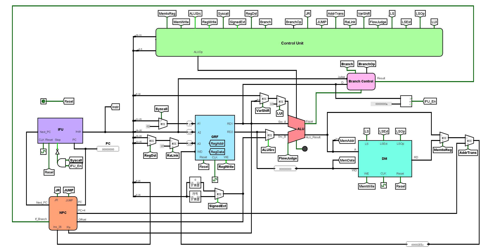
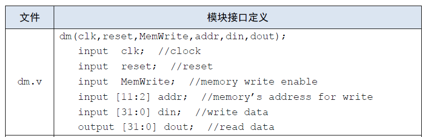

单周期CPU设计方案
设计概述
本文所设计的CPU为Verilog实现的单周期MIPS架构CPU，该CPU支持43条MIPS汇编指令，为了实现该功能，笔者设计了IFU，GRF，NPC，ALU，DM，Controler，Branch Control等关键模块。整个搭建过程通过自下而上的方式完成——先根据应实现的指令对功能部件进行设计与搭建，然后对各个功能部件进行连接，形成完整的数据通路。

实现指令说明
本CPU支持43条指令，包括19条R型指令，2条J型指令，22条I型指令。
R型指令
- 算数/位运算指令：add, addu, sub, subu, and, or, nor, xor
- 移位指令：sll, srl, sra, sllv, srlv, srav
- 置位指令：slt, sltu
- 跳转指令：jr, jalr
J型指令
- 跳转指令：j, jal
I型指令
- 算数/位运算指令： addi, andi, addiu, ori, xori, lui
- B类指令：beq, bne, bgtz, bgez, blez, bltz
- 置位指令：slti, sltiu
- 访存指令：lw, sw, lh, lhu, lb, lbu, sh, sb
###（三）数据通路模块定义
IFU（取指令单元）
该模块内部包含PC（程序计数器）和IM（指令存储器容量为32*1024 bit）。可以根据PC的值从IM取出对应的指令，并具有同步复位的功能。
- 端口定义
信号名 方向 位宽 描述 clk I 1 时钟信号 reset I 1 同步复位信号 stop I 1 停止信号 next_pc I 32 下一条要被执行的指令的地址 pc O 32 输出当前正在执行的指令的地址 instr O 32 输出当前正在执行的指令 - 功能定义
序号 功能名称 功能描述 1 复位 当reset信号有效时，将PC寄存器中的值置为0x00000000 2 停止 当stop信号有效时，PC寄存器忽略时钟输入，PC当前值保持不变 3 写PC寄存器 当stop信号失效且时钟上升沿来临时，将下一条指令的地址（next_pc）写入PC寄存器 4 取指令 根据当前PC的值从IM（指令存储器）中读出对应的指令到instr端口
GRF（通用寄存器组）
该模块内部包含32个具有写使能32位寄存器，分别对应MIPS架构中$0 ~ $31通用寄存器（其中0号寄存器中的值恒为0，即不具备写使能）。GRF可以实现异步复位，同时可以根据输入的5位地址（0~31）向寄存器堆存取数据，实现定向访存寄存器。
-
端口定义
信号名 方向 位宽 描述 clk I 1 时钟信号 pc I 1 当前指令地址 reset I 1 同步复位信号 1：复位信号有效 0：复位信号无效 read_addr_1 I 5 地址输入信号，指定32个寄存器中的一个，将其中的数据读出到RD1 read_addr_2 I 5 地址输入信号，指定32个寄存器中的一个，将其中的数据读出到RD2 write_addr I 5 地址输入信号，指定32个寄存器中的一个，将其作为写入目标 write_data I 32 数据输入信号 RegWrite I 1 写使能信号 1：写入有效 0：写入失效 read_data_1 O 32 输出A1指定的寄存器中的32位数据 read_data_2 O 32 输出A2指定的寄存器中的32位数据 -
功能定义
序号 功能名称 功能描述 1 复位 reset信号有效时，所有寄存器中储存的值均被清零 2 读数据 读出read_addr_1，read_addr_2地址对应的寄存器中储存的数据，将其加载到read_data_1和read_data_2 3 写数据 当RegWrite信号有效且时钟上升沿来临时，将write_data中的数据写入到write_addr地址对应的寄存器
NPC（下一指令计算单元）
该模块根据当前指令地址和控制信号，计算出下一指令所在的地址。
-
端口定义
信号名 方向 位宽 描述 pc I 32 当前指令地址 offset I 32 地址偏移量，用于计算B类指令所要跳转的地址 instr_26 I 26 当前指令数据的前26位（0~25），用于计算jal和j指令所要跳转的地址 ra_data I 32 储存在寄存器（$ra或是jalr指令中存储“PC+4”的寄存器）中的地址数据，用于实现jr和jalr指令 branch_judge I 1 B类指令分支条件判断结果 1：B类指令分支条件成立 0：B类指令分支条件不成立 NPCOp I 3 对输出next_pc的值进行选择 0b000:next_pc为pc+4 0b001:next_pc为分支的地址 0b010:next_pc为j型指令的跳转地址 0b011:next_pc为寄存器中保存的地址 next_pc O 32 输出下一指令地址 pc+4 O 32 输出pc+4的值，用于实现jal和jalr指令中的地址存储
ALU（逻辑运算单元）
该模块可实现加，减，按位与，按位或等11种运算，并根据ALUOP信号的值在这些功能中进行选择。除此之外，该模块还可以实现溢出判断。
- 端口定义
信号名 方向 位宽 描述 ALUOp I 4 ALU功能选择信号 src_A I 32 参与ALU计算的第一个值 src_B I 32 参与ALU计算的第二个值 shamt I 5 移位数输入 FlowJudge I 1 溢出判断信号 1：进行溢出判断 0：不进行溢出判断 equal O 1 相等判断信号 1：src_A和src_B相等 0：src_A和src_B不相等 ALU_result O 32 输出ALU计算结果 flow_result O 1 输出ALU计算结果的溢出情况（add，sub，addi等指令有效） - 功能定义
序号 功能名称 ALU_Op 功能描述 1 加 0b0000 ALU_result = src_A + src_B 2 减 0b0001 ALU_result = src_A - src_B 3 按位与 0b0010 ALU_result = src_A & src_B 4 按位或 0b0011 ALU_result = src_A | src_B 5 按位异或 0b0100 ALU_result = src_A ⊕ src_B 6 按位或非 0b0101 ALU_result = ~(src_A | src_B) 7 逻辑左移 0b0110 ALU_result = src_B << shamt 8 逻辑右移 0b0111 ALU_result = src_B >> shamt 9 算术右移 0b1000 ALU_result = src_B >>> shamt 10 带符号比较 0b1001 ALU_result = (src_A > src_B) ? 1 : 0（带符号比较） 11 无符号比较 0b1010 ALU_result = (src_A > src_B) ? 1 : 0（无符号比较）
DM （数据存储器）
该模块可以实现对数据的存储与访问（包括对字、半字、字节的各种访存操作），还可以实现同步复位。
- 端口定义
信号名 方向 位宽 描述 pc I 32 当前指令的地址 clk I 1 时钟信号 reset I 1 同步复位信号 MemWrite I 1 储存器写入使能信号 1：写入有效 0：写入失效 addr I 32 储存器写入地址 write_data I 32 储存器写入数据 LSOp I 3 访存功能选择
0b000:lw
0b001:sw
0b010:lh
0b011:lhu
0b100:sh
0b101:lb
0b110:lbu
0b111:sbread_data O 32 储存器读出数据
Branch Control（B类指令控制模块）
该模块跟据当前所执行的分支指令类型进行相应判断，并将判断结果输出。
- 端口定义
cmp_data I 32 输入32位数据，用于和0进行比较（实现blez，bgez，bltz，bgtz） equal I 1 相等判断信号，即ALU模块中Src_A和Src_B的比较结果（实现beq，bne） BranchOp I 3 B类指令选择指令 0b000：beq指令 0b001：bgez，bltz 0b010：bgtz 0b011：blez 0b100：bne judge I 1 区别bgez，bltz两个指令 result O 1 输出判断结果 1：B类指令转移条件成立 0：B类指令转移条件不成立
控制模块定义
在控制模块中，我们对指令中Opcode域和Funct域中的数据进行解码，输出ALUOp,MemtoReg等15条控制指令，从而对数据通路进行调整，满足不同指令的需求。为实现该模块，我们又在内部设计了两个子模块——和逻辑（AND Logic）和或逻辑（OR Logic）。前者的功能是识别，将输入的Opcode和Funct数据识别为对应的指令，后者的功能是生成，根据输入指令的不同产生不同的控制信号。
-
控制信号定义
序号 信号名 位宽 描述 触发指令（信号为1） 1 MemToReg 1 GRF中WD接口输入数据选择 2 MemWrite 1 DM写入使能信号 3 ALUSrc 1 ALU中Src_B接口输入数据选择 4 RegWrite 1 GRF写入使能信号 5 SYSCALL 1 syscall指令译码信号，GRF中A1接口输入数据选择 6 SignedExt 1 立即数符号扩展选择 7 RegDst 1 GRF中A3接口输入数据选择 8 AddrToReg 1 指令地址传递信号，选择是否将PC+4输入到GRF的WD端口 9 RaLink 1 ra作为GRF的写入对象 10 VarShift 1 可变移位选择信号，选择是否将指令rs域的五位数据写入ALU的Shift接口 11 FlowJudge 1 溢出判断选择信号 12 BranchOp 3 B类指令选择信号 13 LSOp 3 访存操作选择信号 14 NPCOp 3 next_pc输出选择信号 15 ALUOp 4 ALU功能选择信号 -
生成代码
1
2
3
4
5
6
7
8
9
10
11
12
13
14
15
16
17
18
19
20
21
22
23
24
25
26
27
28
29assign MemToReg = _lw | _lh | _lhu | _lb | _lbu;
assign MemWrite = _sw | _sh | _sb;
assign ALUSrc = _addi | _addiu | _andi | _ori | _xori | _slti | _sltiu | _lw | _sw | _lh | _lhu | _sh | _lb | _lbu | _sb | _lui;
assign RegWrite = _sll | _sra | _srl | _add | _addu | _sub | _and | _or | _nor | _slt | _sltu | _jalr | _xor | _sllv | _srav | _srlv | _subu | _jal | _addi | _addiu | _andi | _ori | _xori | _slti | _sltiu | _lw | _lh | _lhu | _lb | _lbu | _lui;
assign SYSCALL = _syscall;
assign SignedExt = _addi | _addiu | _slti | _sltiu | _lw | _sw | _lh | _lhu | _sh | _lb | _lbu | _sb;
assign RegDst = _sll | _sra | _srl | _add | _addu | _sub | _and | _or | _nor | _slt | _sltu | _jalr | _xor | _sllv | _srav | _srlv | _subu;
assign AddrToReg = _jalr | _jal;
assign RaLink = _jal;
assign VarShift = _sllv | _srav | _srlv;
assign FlowJudge = _add | _sub | _addi;
assign NPCOp[2] = 1'b0;
assign NPCOp[1] = _jalr | _jr | _j | _jal;
assign NPCOp[0] = _jalr | _jr | _beq | _bne | _bgez | _bgtz | _blez | _bltz;
assign BranchOp[2] = _bne;
assign BranchOp[1] = _bgtz | _blez;
assign BranchOp[0] = _bgez | _blez | _bltz;
assign LSOp[2] = _sh | _lb | _lbu | _sb;
assign LSOp[1] = _lh | _lhu | _lbu | _sb;
assign LSOp[0] = _sw | _lhu | _lb | _sb;
assign ALUOp[3] = _sra | _slt | _sltu | _srav | _slti | _sltiu | _lui;
assign ALUOp[2] = _sll | _srl | _nor | _xor | _sllv | _srlv | _xori;
assign ALUOp[1] = _sll | _srl | _and | _or | _sltu | _sllv | _srlv | _andi | _ori | _sltiu | _lui;
assign ALUOp[0] = _srl | _sub | _or | _nor | _slt | _srlv | _subu | _ori | _slti | _lui;
重要机制实现方法
转移指令（B类和J类）实现方法
转移指令包括两种——B类和J类，这两类指令的地址转移功能均需要通过NPC的选择与计算将对应的PC地址传入PC寄存器（IFU模块中）。B类指令数量更多，转移条件的判断也更为复杂，因此我们将其封装成一个模块——BranchControl。该模块的接口定义已经给出，现在分析其内部实现逻辑。
1 | always @(*) begin |
-
据判断逻辑不同，B类指令又可以分为两类——bne，beq和bltz，blez，bgtz，bgez。bne和beq指令需要将两个操作数进行比较，根据两者的值是否相等进一步判断是否执行跳转。“Equal”接口的信号正是两个操作数的比较结果。而bltz，blez，bgtz，bgez四个指令只需要将一个操作数和0进行比较。我们将这个操作数的值直接传入该模块，然后用四个比较器分别计算这四个指令的判断结果。
-
6个B类指令的判断结果已经得到，下面我们要做的是根据当前指令选择出其中一个判断结果进行输出，这就需要通过“BranchOp”（B类指令选择信号）进行选择
BranchOp 对应指令 0b000 beq 0b001 bgez，bltz 0b010 bgtz 0b011 blez 0b100 bne -
由上表可以发现，当“BranchOp”的值为0b001时，对应的指令有两个——bgez和bltz。原因是根据MIPS指令集，bgez和bgtz的Opcode完全一致（000001），无法仅通过Control Unit将这两个指令进行区分。因此，我们需要将指令的16~20位数据输入该模块（在该数据段中bgez指令的值为0b00001，bltz的值为0b00000），即“Judge”信号，将这两个指令的判断结果区分。这样分支指令的判断结果就可以得出，并传入NPC中。
下面我们介绍NPC中B类和J类指令的执行逻辑。
1 | wire [31:0] npc_1 = pc + 32'd4; |
- 我们需要先将输入的数据进行处理，转换为PC地址，包括对“Offset”（B类指令码中的地址偏移量）和“Instruction[25:0]”（j和jal指令码中储存地址的数据段）进行处理。然后通过“branch_jdudge”信号（Branch Control模块输出的结果）和“NPCOp”信号对之前得到的计算结果进行选择，最终将选择后的结果通过“next_pc”端口输出。
- 此外，由于jal和jalr指令中需要将PC+4的值写入到某个寄存器中，因此需要将PC+4的值计算出来通过“PC+4”接口输出。在写入过程中，控制信号“RaLink”和“AddrTrans”起到了调节数据通路的作用。
访存指令实现方法
访存指令包含8个——lw，sw，lb，lbu，lh，lhu，sb，sh，均在DM模块中实现。由于我们的程序中DM为按字地址存储，所以我们无法直接对字节和半字进行操作，需要进行位的拼接。读储存器代码如下：
1 | wire [31:0] temp = data_memory[addr[11:2]]; //get the whole word |
写储存器代码如下：
1 | always @(posedge clk) begin |
测试方案
典型测试样例
运算指令测试
该部分测试通过随机数随机生成，以保证测试数据的任意性，然后与同学代码进行对拍，以确定正确性。（随机生成程序与对拍程序均由同学设计）
其中一组测试数据如下所示
1 | li $0 -5646112 |
转移指令（B类和J类）测试
1 | main: |
访存指令测试
1 | .text |
自动测试工具
我们通过python程序将MIPS汇编程序（test.asm）编译并运行，形成16进制机器码（code.txt）和标准输出（mips_out.txt）。然后命令行运行ise，得到工程文件的输出（verilog_out.txt）.然后我们对两个输出文件进行比较，得出比较结果。若出现不同，还会输出错误日志文件（log_i.txt）。
1 | import os |
思考题
-
Q：根据你的理解，在下面给出的DM的输入示例中，地址信号addr位数为什么是[11:2]而不是[9:0]？这个addr信号又是从哪里来的？

A：因为MIPS架构cpu的指令存储器是按字节寻址，而我们在Verilog中构建的IM是按字寻址的，而且地址尾款为10位（[0:1024]）。因此应该对pc[9:0]进行左移2位的操作，相当于取pc[11:2].addr信号是来源于pc -
Q：思考Verilog语言设计控制器的译码方式，给出代码示例，并尝试对比各方式的优劣。
A：可以记录下 指令对应的控制信号如何取值，也可以记录下控制信号每种取值所对应的指令。如以下代码——1
2
3
4
5
6
7
8
9
10
11
12
13
14
15//第一种方式
always @(*)begin
if(_add == 1)begin
Regwrite = 1;
RegDst = 1;
end
else if(sub == 1) begin
Regwrite = 1;
RegDst = 1;
………………
end
//第二种方式
assign MemToReg = _lw | _lh | _lhu | _lb | _lbu;
assign MemWrite = _sw | _sh | _sb; -
Q：在相应的部件中，reset的优先级比其他控制信号（不包括clk信号）都要高，且相应的设计都是同步复位。清零信号reset所驱动的部件具有什么共同特点
A：都具有寄存器类型，可以对数据进行存储，在运行中可读可写，如pc，DM，GRF。 -
Q：C语言是一种弱类型程序设计语言。C语言中不对计算结果溢出进行处理，这意味着C语言要求程序员必须很清楚计算结果是否会导致溢出。因此，如果仅仅支持C语言，MIPS指令的所有计算指令均可以忽略溢出。 请说明为什么在忽略溢出的前提下，addi与addiu是等价的，add与addu是等价的。提示：阅读《MIPS32® Architecture For Programmers Volume II: The MIPS32® Instruction Set》中相关指令的Operation部分 。
A：英文指令集中，对于ADD的解释是: ADDU performs the same arithmetic operation but does not trap on overflow,也就是说，add和addu仅有溢出检测的区别。在忽略溢出的条件下，无论是否溢出，二者都将计算结果存入rd中，因此二者是等价的。Addi和addiu同理。 -
Q：根据自己的设计说明单周期处理器的优缺点。
A：单周期的CPU会在一个时钟周期内完成所有的工作，既从指令取出，到得到结果，全部在一个时钟之内完成。优点是设计较为简单，指令与指令之间独立，缺点是cpu的时钟周期受关键路径限制，时钟周期较长，效率比较低。
If you like this blog or find it useful for you, you are welcome to comment on it. You are also welcome to share this blog, so that more people can participate in it. If the images used in the blog infringe your copyright, please contact the author to delete them. Thank you !